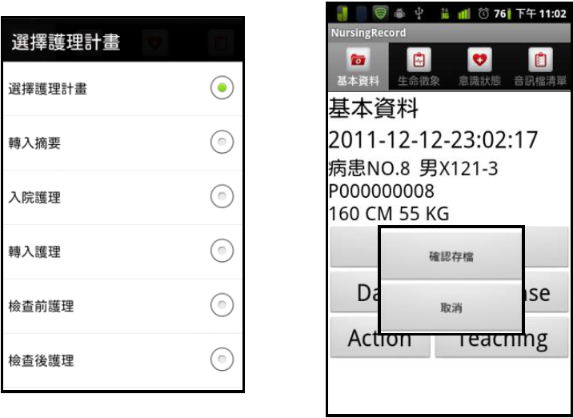
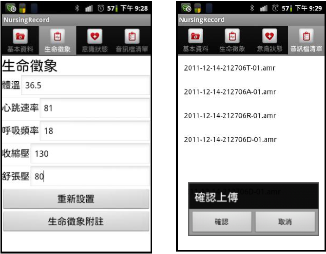

邊做、邊說、邊記-隨身護理記錄輔助系統
動機：
我們訪問了年資超過6年的護理人員，了解他們的工作內容與負擔，發現護理記錄扮演著很重要的角色。護理記錄可清楚地記載病人得到了什麼照護以及目前的狀況，讓護理人員繁忙的工作內容得到有條理的記錄，並在任何情況下可調閱、瀏覽，所以護理人員除了照顧病人外，還需要花費額外的時間來登記護理記錄，並且幾乎是利用自己下班時間作業。
目的：
我們希望開發一套隨身護理記錄輔助系統，幫助護理人員在照護病人完畢後，可以利用說話的方式記錄護理記錄，使得護理記錄具有完整性並節省記錄的時間。因為說話的方式通常比書寫或打字的速度來得快，而在編輯系統編寫護理記錄內容時，可聆聽原始音訊檔以確認其內容，使得記錄具有完整性、準確性，並且大幅節省實作護理記錄的時間。這麼一來還可以減少護理人員在執行護理照護時腦中的負荷，不怕遺忘前幾位病人的照護細節，能專心一意的應付各個狀況，也可以清楚地記錄為病人所做的一切照護，提升醫療品質。。
整體流程：
護理人員使用手持設備，將護理過程用錄音方式記錄，錄製完畢後將錄音檔上傳至伺服器端，再送至Google進行語音辨識。由於一段語音檔會有多筆的語音辨識結果，所以我們使用字典樹快速篩選出含有最多醫護詞彙的語音辨識結果，然後將辨識結果放到焦點記錄法的F、D、A、R、T各欄位中，並自動修正語音辨識的錯誤。我們使用Local Alignment演算法，從聲音層面比對辨識結果與醫護專用詞彙的相似性，若相似性高於臨界值便修正對應到的辨識結果。我們也提供相似分較數高的詞彙讓使用者在網頁編輯系統中編輯護理記錄時可以手動選擇更換詞彙。護理記錄編輯系統中有原音重現的功能，讓護理人員聆聽當時的錄音內容。系統會自動將原始音訊檔分割，將分割後的音訊檔片段對應到各句子，可達到不需要從頭聆聽的效益。護理人員聆聽並參考音訊檔內容做即時修正，不僅節省回想的時間，還讓醫護人員更準確的記錄所做的護理照護。

圖一：系統整體流程
方法：
目前遇到最大的困難點在於沒有能力在短時間內開發一套醫護專業領域的語音辨識軟體，所以我們使用Google語音辨識系統，它在中文辨識與跨平台的自由性來說，比其他廠牌來的高，可以讓我們先將錄音檔儲存後，再上傳至雲端進行語音辨識。由於Google語音辨識系統對音訊檔案時間具有限制，所以我們利用大津法(Otsu’s Method)，實作二值化，區分出背景音與語音，自動找到幾個語句上的停頓點，將原音訊檔分割成多個子檔案。
本系統為了應付從不同來源接收到的護理記錄而使用平行化處理，提升系統效率。語音辨識的各項工作(接收/合併/分割音訊檔、語音辨識、快速篩選最佳的語音辨識結果、合併字串後儲存至資料庫)皆用平行化處理以減少處理時間。
由於我們使用的並非醫護專業領域的語音辨識軟體，因此使用Local Alignment 演算法找出辨識結果中可能出現的護理記錄常用詞彙，以便更正語音辨識結果。我們準備了中、英文字典各一部，記錄著護理記錄中常用的中、英文詞彙。我們將語音辨識結果與一組護理常用詞彙轉換成音素(以國際音標表示)，再利用Dynamic Programming 方式計算兩組音標相似度，找出語音辨識結果與護理常用詞彙最相似的片段，此詞彙即為這段子字串的替換候選詞。聲符相似程度則依照”以最佳化及機率分佈判斷漢字聲符之研究”、”以母語輔助建立個人化辨識網路並應用於英文錯誤發音偵測之研究”兩篇研究論文，訂定中、英文各音素間的相似分數。
由於我們使用的並非醫護專業領域的語音辨識軟體，因此使用Local Alignment 演算法找出辨識結果中可能出現的護理記錄常用詞彙，以便更正語音辨識結果。我們準備了中、英文字典各一部，記錄著護理記錄中常用的中、英文詞彙。我們將語音辨識結果與一組護理常用詞彙轉換成音素(以國際音標表示)，再利用Dynamic Programming 方式計算兩組音標相似度，找出語音辨識結果與護理常用詞彙最相似的片段，此詞彙即為這段子字串的替換候選詞。聲符相似程度則依照”以最佳化及機率分佈判斷漢字聲符之研究”、”以母語輔助建立個人化辨識網路並應用於英文錯誤發音偵測之研究”兩篇研究論文，訂定中、英文各音素間的相似分數。
網頁式護理記錄編輯系統則使用Javascript Framework JQuery，AJAX技術開發，提供更好的互動性操作，以方便編輯。
結果：
我們請二位護理人員測試系統。他們對我們的整體構思非常滿意，尤其利用語音輸入比起手寫來的輕鬆自在，且在編輯系統的語音重現功能，讓他們更加認同此系統可以提醒他們可能會忘記的細項。他們覺得如果語音辨識的部分可以更加準確，讓他們在修改時只需做一些增字、減字、或是修改幾個名詞的話，這一套系統是可以減少他們的負擔，會很想使用。
表一：語音辨識結果與原始正確內容之相似度
| 受試者 | 未經過本系統後處理 | 經過本系統處理 |
| 1 | 0.464 | 0.524 |
| 2 | 0.562 | 0.591 |
 